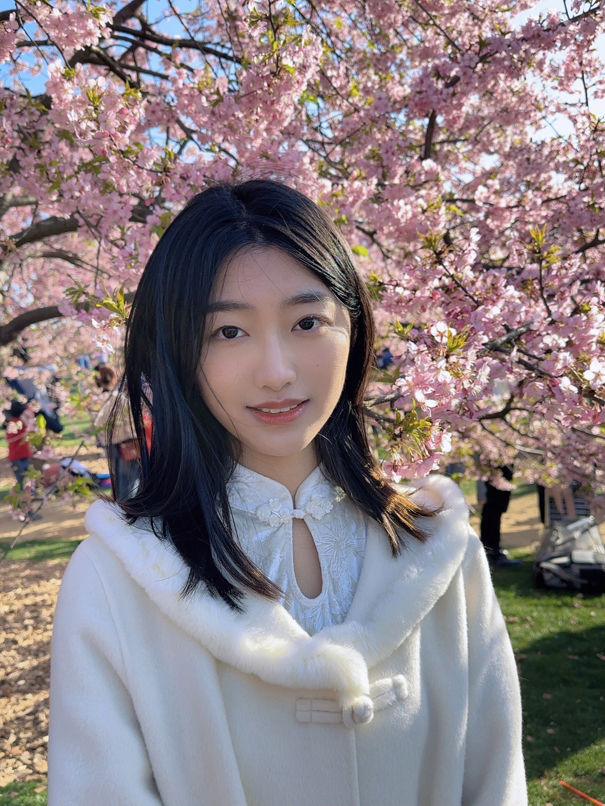

Stanford University · Computer Science
Fan Nie
I am a CS PhD at Stanford University, advised by Prof. James Zou. I am also fortunate to work closely with Prof. Percy Liang, Prof. Huaxiu Yao, and Prof. Linjun Zhang.
Previously, I worked with Prof. Alexandre Alahi, Prof. Junchi Yan, and Prof. Hang Zhao.

01
Research
My research focuses on building self-improving AI agents that continually learn from experience and enable automated scientific discovery. In particular, I am currently studying how such systems can learn and improve without oracle supervision.
02
Selected Publications
UQ: Assessing Language Models on Unsolved Questions
EvoLM: In Search of Lost Language Model Training Dynamics
Weak-for-Strong: Training Weak Meta-Agent to Harness Strong Executors
TAROT: Targeted Data Selection via Optimal Transport
FactTest: Factuality Testing in Large Language Models with Finite-Sample and Distribution-Free Guarantees
Boosting Offline Reinforcement Learning for Autonomous Driving with Hierarchical Latent Skills
Uncertainty-Aware Decision Transformer for Stochastic Driving Environments
Learning Divergence Fields for Shift-Robust Graph Representations
Graph Out-of-Distribution Generalization via Causal Intervention
03
Service
Reviewer for NeurIPS 2024–2025, ICRA 2024–2025, ICLR 2025–2026, AISTATS 2025–2026, ICML 2025–2026, and COLM 2025–2026.
04
Awards
- Best Reviewer Award, AISTATS
- Outstanding Graduate, Shanghai Jiao Tong University
- Outstanding Student Leader, Shanghai Jiao Tong University
- Excellence Scholarship, Department of Computer Science
- Rongchang Scientific & Technological Innovation Scholarship
05
Other
I am passionate about the arts, especially music, drawing, and poetry.
My favorite movie is Atonement, and my favorite poet is Jorge Luis Borges.
I also enjoy reading, travelling, photography, yoga, and Pilates.